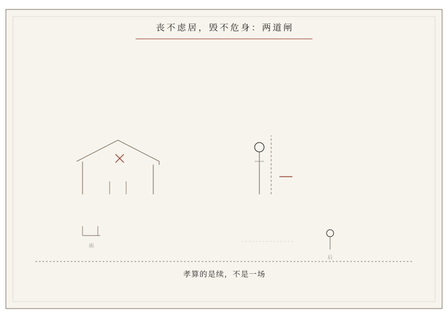

檀弓下 · 四·七十四 · 第 399 课
丧不虑居，为无庙也。毁不危身，为无后也。
说什么事：办丧事不为「居」发愁到卖宅——因为卖了宅，先人就无庙可依。居丧毁瘠而不可危身——因为毁了身，先人就无后可继。
落在哪一层：以「可持续」为界。孝有两道闸：一闸在屋，一闸在身。
为何编在此位：上是「苛政猛于虎」之重，此回到丧礼最细的一处账。一篇将至卷末，笔反落到「不可过」上。
【经】丧不虑居，为无庙也。毁不危身，为无后也。
【注】谓卖舍宅以奉丧。／谓憔悴将灭性。
【疏】丧不虑居，谓卖舍宅以奉丧。毁不危身，谓憔悴将灭性。
（底本此节疏极简，仅就注文重言之，未别出正义。）
丧 丧事。
虑居 为居处发愁，谓卖宅以奉丧。
为无庙也 因为卖了宅，庙便无所立。
毁 居丧哀毁，形销骨立。
危身 伤及性命。
为无后也 因为身毁则无嗣可继。
办丧事不必为居处发愁到卖宅——一卖宅，先人就无庙了。居丧可以哀毁，但不可危身——一危身，先人就无后了。
此章两句，句句皆「为」字作结。
前句之「为」，是为「无庙」；后句之「为」，是为「无后」。
两「无」字，把孝从一时之痛，拉到三代之续。
第一层 「丧不虑居」的实指 注云「谓卖舍宅以奉丧」。
此句所禁者极具体：不许卖房子办丧事。 不是不许尽力，是不许尽到这个地步。
第二层 何以不许：庙 宅者，庙之所依。卖了宅，则先祖无食。
礼在此把「厚葬」与「废祀」放在天平上，取后者为重。 一场办得体面的丧，抵不过一份续得上香火的祀。
第三层 「毁不危身」的实指 注云「谓憔悴将灭性」。
此句所禁者亦极具体：不许哭到伤身。 尽哀而不至灭性，是丧礼的常经。
第四层 何以不许：后 身者，后之所出。身毁则嗣绝。
前句为「先人无食」，后句为「先人无后」。 两句合看，孝的对象始终不是「我此刻的痛」，是「他们在身后有没有人管」。
第五层 这两句的分量 此二语亦见于《曲礼》，为居丧之通义。
《檀弓》取之，正为篇末一节针：丧礼的全部精密，最后落在两个「不许过」上。
第六层 「虑」字之细 「虑」者，谋也、算也。
礼不许为丧而谋居，即不许把哀变成一场算计。 丧中一切筹划，皆有界限；过了界，哀就变成了别的东西。
第七层 与今之厚葬对读 今有举债治丧、卖房修墓者，自以为孝。
按此经，此非过孝，是不孝——因为断了下一次。 礼算的是续，不是场面。
与今日何干 今人办事，多能算一场的体面，少算下一场的可能。
此章给一句：把「还要有一次」算进去，分寸就出来了。
| 左 | 右 |
|---|---|
| 丧 | 奉丧之事 |
| 不虑居 | 不许卖宅 |
| 为无庙 | 先人无食 |
| 毁 | 哀毁形销 |
| 不危身 | 不许灭性 |
| 为无后 | 先人无嗣 |
| 虑 | 谋算 |
| 尽哀而不危身 | 丧礼之常 |
| 算续不算场 | 全章之要 |
画一幅左右对照的极简图示，视点平视。画面左半画一座小宅：一道屋脊、两根立柱、柱间一道门限，屋脊之上压一道短叉，表示「不可卖」。画面右半画一人形直立，其右侧画一条竖虚线为界，界线之外再画一条极短的赭色横线，表示「越界则危」。两半之间下方各画一个极小的标记：宅之旁画一只小方框（示庙），人之旁画一个更小的人形（示后）。不画文字。赭色只用在那条横线上。
